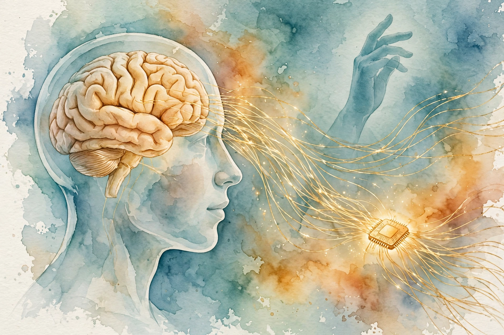

Lex Fridman track index / Companion
Lex Fridman Podcast · Episode 4 · Companion
Neuralink: The Brain, the Robot, and the First Human
The full N1 hardware chain, the robot surgery, the race to beat the best gaming mouse, and the first human implant, told by the people who built it and the man who wears it.

Illustration. The N1 implant and its threads, imagined in watercolor. AI-generated illustration.

Photo. Elon Musk, Neuralink co-founder. Photo by Gage Skidmore, CC BY-SA 4.0, via Wikimedia Commons.
Watch. The official episode video. Chapter times above are proportional estimates. Use the chapter menu to follow along.
The Wisdom Index: every nugget in this companion
Source fact A claim from the episode transcript. Interpretation My read on what it means. Facts carry episode times. Times marked ~ are proportional estimates from word position, since the transcript has no timestamps. Transcripts are auto-generated captions, so chapters paraphrase rather than quote.
~00:00
Five Conversations, One Story
Source fact Lex structures this episode as five separate interviews: Elon Musk, DJ Seo (VP of engineering), neurosurgeon Matthew McDougall, software lead Bliss Chapman, and Nolan Arbaugh, the first human to receive a Neuralink implant. At ~10.5 hours of transcript, it is Lex's longest episode.
Elon opens with the state of play. The second implant is in and working, with about 400 electrodes providing signal, and the plan is 10 human participants by the end of 2024, pending regulatory approval. Even with roughly 10-15% of Nolan's electrodes working, the team hit a world record:
We were able to get to achieve a bits per second that's twice the world record.
Elon Musk on Nolan's early results · ~00:15
His roadmap is a ladder of data rates: 100 bits per second within a few years, a megabit within five. The long-term thesis is that AI-human symbiosis is a bandwidth problem. An AI that communicates at terabits per second will get bored waiting for a human typing a few words per second. The average human, Elon notes, communicates at less than one bit per second averaged over a full day.
Nugget 1 · Tech trees
Solve the basics before the saga
What happened. Elon describes Neuralink's work as a tech tree: you need literacy before you can have Lord of the Rings, and basic neuron repair before telepathy.
Why it matters. Sequencing a project wrong burns credibility. Solving the most basic real problem first buys the right to attempt the ambitious one.
The principle. Climb the tech tree in order. Each rung should produce something genuinely useful on its own.
~01:39
The N1 Implant: Threads, Chips, and Heat
Source fact DJ Seo breaks the device into numbers. The N1 implant carries 64 threads, each with 16 electrodes, for 1,024 channels total. Threads taper from 16 to 84 microns wide and are under 5 microns thick. Raw recording runs at just under 20 kHz with 10-bit precision, about 200 megabits per second streaming into the chip.
That much data cannot leave a skull as heat. An on-board routine called the BOSS algorithm sorts spikes right on the implant and ships only the interesting events over Bluetooth to the Link app. The whole device is the size of a US quarter and 9 mm thick, and most of its volume is the rechargeable battery. Charging is inductive, but tissue may not rise more than 2 degrees Celsius, so a ferrite shield steers the charging field away from the battery can.
The scaling path is explicit: 1,000 channels today, 3,000 to 6,000 by the end of 2024, 16,000 by the end of 2025. The hard parts are not the wires themselves. They are power per channel, wireless bandwidth for the spikes, and the hermetic seal against what Seo cheerfully calls the brain's attempts to kill the electronics.
Nugget 2 · Bottlenecks
Measure the real bottleneck
What happened. The implant records 200 megabits per second, but the usable output is a trickle of spike events, because heat, not silicon, is the limit inside a skull.
Why it matters. The constraint that binds is rarely the headline spec. Design to the true bottleneck and compress everything else toward it.
The principle. Find the binding constraint first, then optimize the system around it instead of the vanity metric.
~04:10
The R1 Robot and the One-Inch Hole
Source fact Matthew McDougall, the neurosurgeon, does the human part: a one-inch hole in the skull over the hand-knob region of motor cortex, located by functional MRI. Then the R1 robot inserts each thread with computer vision steering around surface blood vessels. Before the first human surgery, the team practiced on a pulsing 3D-printed brain matched to the patient's anatomy.
McDougall is honest about the trade. Humans adapt to surprises mid-surgery. The robot follows its plan. But no human hand can steer hair-thin flexible wires around blood vessels at this scale, and there are not enough neurosurgeons on Earth to serve millions of future patients. The robot exists because the procedure must eventually be ordinary.
Interpretation The episode treats surgery as a manufacturing problem, not a heroics problem. Practicing on a bespoke pulsing brain model, with mock CT scans and a mannequin body, is quality engineering applied to an operating room.
~05:43
The Best Mouse in the World
Source fact Bliss Chapman leads the decoding software, and his goal is stated as plainly as possible:
I want to build the best mouse in the world.
Bliss Chapman · ~05:45
The numbers: brain spike to cursor movement takes about 22 milliseconds today. The best gaming mice do 5 milliseconds. The natural path, brain to hand muscle, takes about 75 milliseconds. The implant already beats the body's own wiring. Chapman predicts that within five to ten years, esports competitions could be dominated by players with paralysis, because they get the best input technology first and have the time to master it.
The bottleneck is Bluetooth, whose low-energy protocol batches updates no faster than every 7.5 milliseconds, plus the screen refresh rate. Calibration is the deeper problem: the model must infer true intention from noisy spike labels without ever observing the movement. The user adapts to the model while the model trains on the user, a co-adaptation loop Chapman calls an unsolved problem that more channels alone will not fix.
Source fact DJ Seo frames the mission population: about 180,000 people live with quadriplegia in the US, and roughly 18,000 suffer a paralyzing spinal cord injury each year. The first product is what the team calls digital telepathy: controlling a computer by thought alone.
Nugget 3 · Co-adaptation
The user adapts to the model too
What happened. Nolan learned tricks to work around the decoder's quirks, the way people learn to work around buggy software, instead of the decoder getting fixed.
Why it matters. In any human-machine loop, both sides adapt. Optimizing only the machine side misses half the system.
The principle. When user and model train each other, debug the loop, not just the model.
~08:17
Nolan: The Yellow Spike
Source fact Nolan Arbaugh had a diving accident in 2016 that left him paralyzed with no feeling below the shoulders. In January 2024 he became the first human to receive the N1 implant. The night before surgery he FaceTimed Elon Musk and said "let's rock and roll". After the call he told the twenty people around him, "I just hope he wasn't too star struck talking to me."
Days after surgery, the team showed him a tablet with eight channels of live neural data. He tried wiggling his fingers and spotted a yellow spike firing every time he moved his index finger. That became cursor control, then the WebGrid benchmark: 8 bits per second at first, then a world record of 8.5. His stated targets are 9, then 10. Bliss Chapman's own score is about 17.1.
Then the setback: some threads retracted from the cortex. Nolan called the news devastating. The team shipped an over-the-air firmware update, switching spike detection to spike-band power, and performance came back stronger than before. The dwell cursor replaced click calibration for a while: hover three seconds to click, adjustable down toward fractions of a second.
have fun and work hard
Nolan Arbaugh, advice to future trial participants · ~10:05
Nugget 4 · Recovery
Ship the firmware fix
What happened. When threads retracted, the team did not reopen the skull. They pushed a software update, like updating a phone, and recovered better-than-original performance.
Why it matters. Hardware failures are not always hardware problems. A system designed for remote repair turns a crisis into a patch.
The principle. Build the upgrade path into version one. The first failure will test it sooner than you expect.
~10:10
Blindsight and the Road to a Megabit
Source fact Elon's two-track plan: medicine first, augmentation later. The medical track climbs from digital telepathy to spinal implants that bridge brain and body, then Blindsight, a second product that stimulates the visual cortex directly. About one million Americans are legally blind, and for many of them only cortical stimulation can work, since retinal devices fail when the optic nerve itself is damaged.
The augmentation track starts once thousands of patients and years of data push risk near zero. Communication rates that exceed normal humans, then vision in infrared and ultraviolet, beyond biological eyes. The five-year target: a megabit per second of neural data rate.
Interpretation The episode never pretends the timeline is certain. Channel targets, megabit goals, and esports predictions are Elon's stated ambitions, recorded here as stated, not as verified outcomes.
Nugget 5 · Dual track
Augmentation starts with the disabled
What happened. Neuralink aims its superhuman goals at quadriplegic patients first, not at healthy volunteers seeking an edge.
Why it matters. The highest reward justifies the irreducible risk. Starting where the need is greatest earns both the data and the moral license.
The principle. Aim the ambitious version at the people who need it most. The edge cases become the proof.